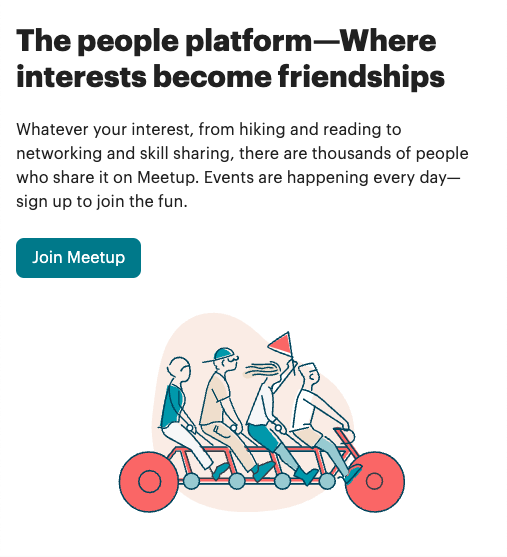
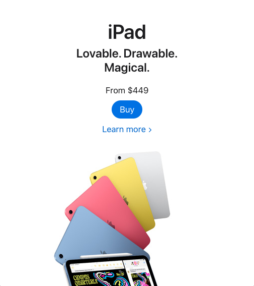

Color Contrast
Tesla
www.tesla.com
The Tesla home page shows an excellent example of color contrast. The middle of the page is largely taken up by a blue car. This differs drastically from the rest of the page which is a light gray. Because of this contrast your eye is immediately drawn to the car upon opening their website.
Visual Hierarchy
Meetup
www.meetup.com
Visual hierarchy is a method of arranging elements to draw the eye in a certain path or order. Meetup is a great example of how using visual hierarchy can be used. Their login page has their brief introduction larger and bold to draw the eye to it. Just under in smaller font a better explanation of what they do, followed by the button to sign up. By the use of visual hierarchy your eye is naturally drawn along that path learning about the website and then signing up.
White Space
Apple
www.apple.com/ipad
The use of white space on Apple’s website is easy to use. By using white space they are able to have a clean and organized look. Attention is brought to the center because there simply isn’t anything else to look at. The white space can lend elegance to a page when used correctly as Apple does in this example.